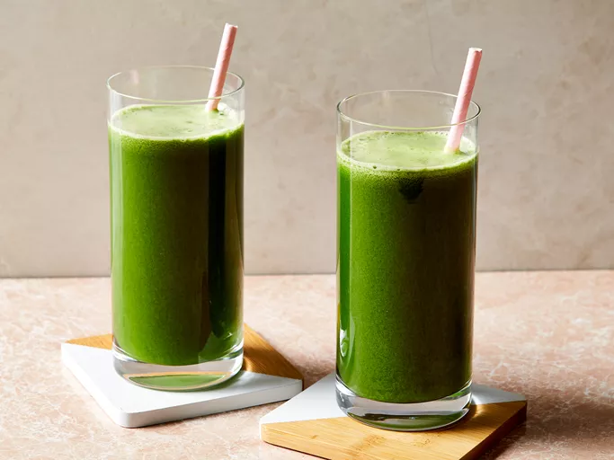

Healthy Green Juice
This green juice recipe with kale, cucumber, celery, apples, and ginger is great for detoxing after the holidays or whenever you have overdone it! Adjust fruit and veggie amounts to suit your personal taste.

Ingredients
- 4 stalks celery, leaves removed
- 2 green apples, halved
- 1 cucumber
- 6 leaves kale
- 1/2 lemon, peeled
- 1 (1 inch) piece fresh ginger
Directions
- Gather all ingredients.
- Process celery, apples, cucumber, kale, lemon, and ginger through a juicer
- Serve immediately or store in a glass jar in the fridge for up to one day; shake before drinking
Home